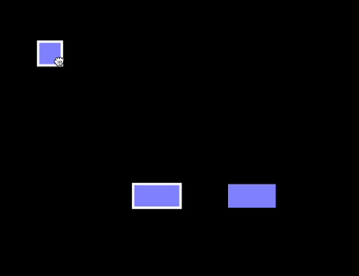
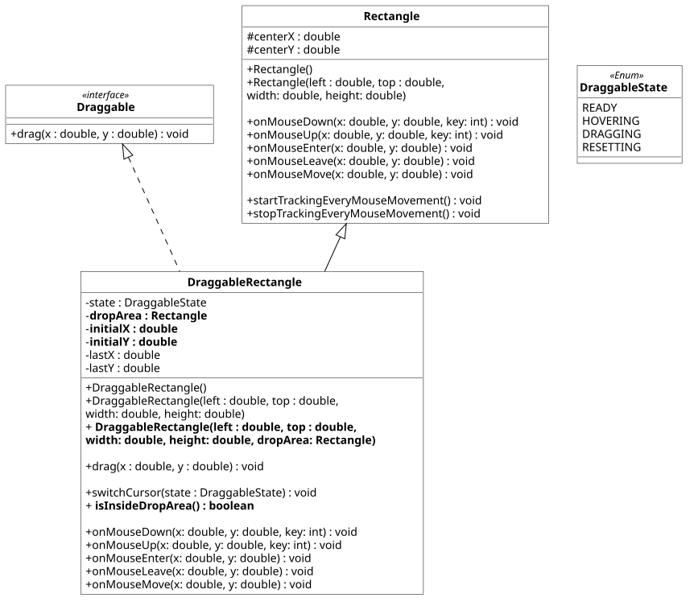

Praktikum 7: Schnittstellen für grafische Objekte
In diesem Praktikum wollen wir die Implementierung und den Einsatz von Schnittstellen insbesondere bei grafischen Objekten erlernen.
🚀 Lernziele
Sie können:
- Schnittstellen für grafische Objekte definieren und verwenden
- Lösungen finden, um Schnittstellen effektiv umzusetzen
- Maus-Ereignisse in JOE zielgerichtet einsetzen
🤔 Vorbereitung
Bitte bearbeiten Sie die folgenden Aufgaben vor Ihrem Praktikumstermin. Diese sollen sicherstellen, dass Sie die gestellten Praktikumsaufgaben inhaltlich und zeitlich schaffen.

Wir werden in diesem Praktikum grafischen Objekten dank Schnittstellen inviduelles Verhalten ermöglichen. Konkret wollen wir die in der IDE bereits integrierten Objekte wie Rectangle oder Circle verschiebbar (=draggable) machen. In JOE gibt es für die Reaktion auf Mausaktivitäten die folgenden Methoden:
-
onMouseDown(double x, double y, int key)
Wird aufgerufen, wenn sich der Mauszeiger über dem Objekt befindet und eine Maustaste heruntergedrückt wurde.
key == 0: linke Taste, key == 2: rechte Taste. -
onMouseUp(double x, double y, int key)
Wird aufgerufen, wenn sich der Mauszeiger über dem Objekt befindet und eine Maustaste losgelassen wurde.
key == 0: linke Taste, key == 2: rechte Taste. -
onMouseEnter(double x, double y)
Wird aufgerufen, wenn der Mauszeiger sich in das Objekt hineinbewegt. -
onMouseLeave(double x, double y)
Wird aufgerufen, wenn der Mauszeiger sich aus dem Objekt herausbewegt. - onMouseMove(double x, double y) Wenn das Objekt den Fokus hat und das dabei die Maus bewegt wird.
Aufgaben:
- Schnittstellen: Bitte lesen Sie noch einmal, wie diese in Java definiert und genutzt werden (siehe Vorlesung 7).
- Maus-Ereignisse: Schauen Sie sich bitte an, welche Methoden grafische Objekte wie Rectangle in JOE haben, um auf Mauseingaben zu reagieren (siehe oben).
- MyRectangle-Klasse: Erstellen Sie eine Klasse MyRectangle, die von Rectangle erbt. Überschreiben Sie alle Methoden, die auf Maus-Aktivitäten reagieren (siehe oben) und geben Sie darin mit println den Namen des Events aus (z.B. onMouseLeave). Untersuchen Sie, wann welche Ereignisse durch Mausbewegungen ausgelöst werden.

Beachten Sie bitte, dass die Klasse Rectangle nur die für die Aufgaben relevanten Attribute/Methoden enthält. Beachten, Sie auch dass centerX und centerY für alle grafischen Objekte in JOE genutzt werden. Ein Rechteck initialisieren Sie aber mit der oberen, linken Ecke. Das müssen Sie unbedingt beachten, wenn Sie auf diese Attribute zugreifen. Die Klasse Rectangle erbt bereits viele der angegebenen Methoden/Attribute. Der Vollständigkeit halber kann man sich gern dieses Klassendiagramm ansehen: learnJ-Doku
{kind=link}
📝 Pflichtaufgaben (1 Bonuspunkt)
Die Draggable-Schnittstelle
In dieser Aufgabe werden wir die Draggable-Schnittstelle definieren, mit deren Hilfe grafische Objekte auf dem Canvas (=Zeichenfläche) verschoben werden können. Exemplarisch werden wir die DraggableRectangle-Klasse definieren, die Draggable implementiert, sodass wir Rechtecke verschieben können. Beachten Sie dazu bitte das geg. Klassendiagramm (Fettgedruckte Attribute/Methoden: nur für Bonusaufgabe), das eingangs geg. grafische Beispiel sowie die folgenden Teilaufgaben.
Teilaufgaben:
- Draggable-Schnittstelle: Definieren Sie bitte die Schnittstelle Draggable entsprechend dem gegebenen Klassendiagramm.
- DraggableRectangle-Klasse: Erstellen Sie eine DraggableRectangle-Klasse, die von Rectangle erben soll und Draggable implementiert.
- Weißer Rahmen: DraggableRectangle sollen einen weißen Rahmen bekommen, damit diese eindeutig erkennbar sind (siehe Animation oben).
- Maus-Ereignisse: Überlegen Sie sich zunächst genau, welche Maus-Ereignisse Sie brauchen, um ein Rechteck verschieben zu können. Überschreiben Sie diese Methoden.
- Zustände: Implementieren Sie den Enum DraggableState, der die Zustände READY, DRAGGING, RESETTING haben soll. Beim Instanziieren eines DraggableRectangle soll sich das Objekt zunächst im Zustand READY befinden. Position verändern: Sobald ein DraggableRectangle gedrückt (siehe Maus-Aktivitäten) wird, soll die Position entsprechend der Mausbewegung geändert werden (siehe auch: Animation ganz oben). Der Zustand des Rechtecks soll sich beim Verschieben zu DRAGGING ändern. Wenn der Vorgang abgeschlossen ist (Maus losgelassen), soll sich der Zustand wieder zu HOVERING bzw. beim Verlassen des Objekts zu READY ändern. Nutzen Sie die Methoden super.startTrackingEveryMouseMovement(), um ein sauberes Verfolgen der Bewegung zu ermöglichen. Nach dem Verschieben sollten Sie das mit Hilfe der Methode super.stopTrackingEveryMouseMovement() wieder rückgängig machen.
- Cursor verändern mit switchCursor: Je nach Zustand des Rechtecks, sollen unterschiedliche Cursor dargestellt werden. Beim Überfahren (Hovering) eines DraggableRectangle soll ein 👆-Cursor erscheinen. Sobald es anklickt wird und die Maustaste festgehalten wird, soll ein Zieh-Cursor angezeigt werden. Beispiele für alle 3 Cursor-Varianten finden Sie in der CursorDemo.java unten . Setzen Sie den Wechsel des Cursors in der switchCursor-Methode um.
- Liste anlegen: Legen Sie in der Main.java eine Liste an, die sowohl Rectangle als auch DraggableRectangle enthält. Geben Sie den Rechtecken unterschiedlichen Positionen und Größen. Stellen Sie mit Hilfe einer foreach-Schleife alle Rechtecke der Liste dar.
⭐ Zusatzaufgaben (1 Bonuspunkt)
2 - Ablagebereiche für Objekte
Bis jetzt können wir DraggableRectangle-Objekte bewegen (=drag) und überall im Zeichenfeld ablegen (=drop). Wir wollen unsere Implementierung jetzt um Ablagebereiche (=drop area) erweitern. Diese sollen ermöglichen, dass DraggableRectangle-Objekte nur dort abgelegt werden können. Beachten Sie bei der Umsetzung bitte die fettgedruckten Attribute und Methoden im Klassendiagramm sowie folgende Anforderungen.
Anforderungen:
- Definieren Sie mit einem Rechteck (Rectangle) einen Ablagebereich, den Sie dem Konstruktor von DraggableRectangle übergeben (drop area).
- Implementieren Sie die Methode isInsideDropArea, die prüfen soll, ob sich das DraggableRectangle aktuell vollständig innerhalb des Ablagebereichs befindet.
- Der Maus-Cursor soll außerhalb des Ablagebereichs den Anwender:innen deutlich zeigen, dass ein Ablegen nicht möglich ist 🚫 (siehe: Cursor-Symbole oben).
- Wenn ein Ablegen des DraggableRectangle nicht möglich ist, soll dieses an die ursprüngliche Position (bevor Objekt verschoben wurde) zurückgesetzt werden.
- Optional 🌟: Animieren Sie das Zurücksetzen des Rechtecks, in dem dieses langsam auf dem kürzesten Weg (Linie) zum Ursprung (initialX/initialY) zurückgeführt wird. Setzen Sie den Zustand des DraggableRectangles während des Zurücksetzen bitte auf RESETTING.
Ergänzen Sie Ihre Ideen gern hier (Speichern und Laden der vorhergehenden Aufgabe) oder fügen Sie es direkt im vorhergehenden IDE-Fenster hinzu.